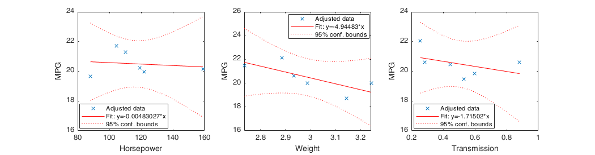

Y = [21 21 22.8 21.4 18.7 18.1]';
X = [1 110 2.620 1; ...
1 110 2.875 1; ...
1 93 2.320 1; ...
1 110 3.215 0; ...
1 175 3.440 0; ...
1 105 3.460 0];
Beta = inv(X' * X) * X' * Y;
Yhat = X * Beta;
Residuals = Y - Yhat;
Sigma2 = (Residuals' * Residuals) / (size(X,1) - size(X,2));
Vcov = Sigma2 * inv(X' * X);
SE = sqrt(diag(Vcov));
Effects = {'Constant';'Horsepower';'Weight';'Transmission'};
Estimate = round(Beta,3);
StandardError = round(SE,3);
table(Estimate,StandardError,'RowNames',Effects)
figure('Position', [100 100 1050 275])
for i = 1:3
subplot(1,3,i);
addedvarplot(X(:,2:4),Y,i,[true true true]);
ylabel('MPG');
xlabel(Effects{i+1});
title('');
end
ans =
4×2 table
Estimate StandardError
________ _____________
Constant 36.7 9.738
Horsepower -0.005 0.024
Weight -4.945 3.075
Transmission -1.715 2.442
